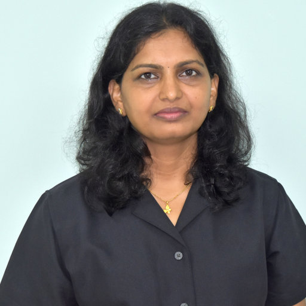
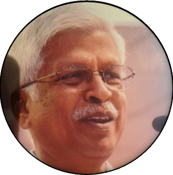

Prof. R. Panneer Selvam, University of Arkansas, USA
Prof. K. Vajravelu, University of Central Florida, USA

Dr. Ashwin Vaidya, Mont Clair State University, USA
Prof. J. Prakash, University of Johannesburg, SA
Dr. Kannan Sundaravadivelu, IHPC, A*STAR, Singapore

Dr. Sivasankaran Sivanandam, King Abdulaziz University, Kingdom of Saudi Arabia

Prof. O. D. Makinde, Stellenbosch University, South Africa

Dr. Zailan Bin Siri. Institute of Mathematical Sciences, University of Malaya, MALAYSIA

Dr. Santo Banerjee, University Putra Malaysia, Malaysia

Dr. P. Nagarani, The University of West Indies, Jamaica

Prof. Daniel J. Mashao, University of Johannesburg

Prof. Tien-Chien Jen, University of Johannesburg

Prof. Ebrahim Momoniat, University of Johannesburg

Prof. Tshilidzi Marwala, University of Johannesburg

Prof. Edward Lungu, Botswana International University of Science & Technology

Dr. Abhishek Agarwal, University of Botswana

Dr Raj Das, RMIT University, Australia
Indian Speakers

Prof. P. Kandaswamy, Bharathiar University, Coimbatore

Prof. P.V.S.N. Murthy, IIT Kharagpur
Prof. Pradeep G. Siddheshwar, CHRIST (Deemed to be University), Bangalore
Prof. A. Senthil Kumar, VIT Vellore

Dr. P. Srinivasa Rao, Indian School of Mines, Dhanbad

Dr. Harish N Dixit, IIT Hyderabad

Dr. Amitab Bhattacharya, IIT Delhi

Dr. Girish Kumar Rajan, IIT Tirupati

Dr. Ashok Misra, Centurion University of Technology and Management, Orissa

Dr. Vishnu Narayan Mishra, Indira Gandhi National Tribal University, Madhya Pradesh